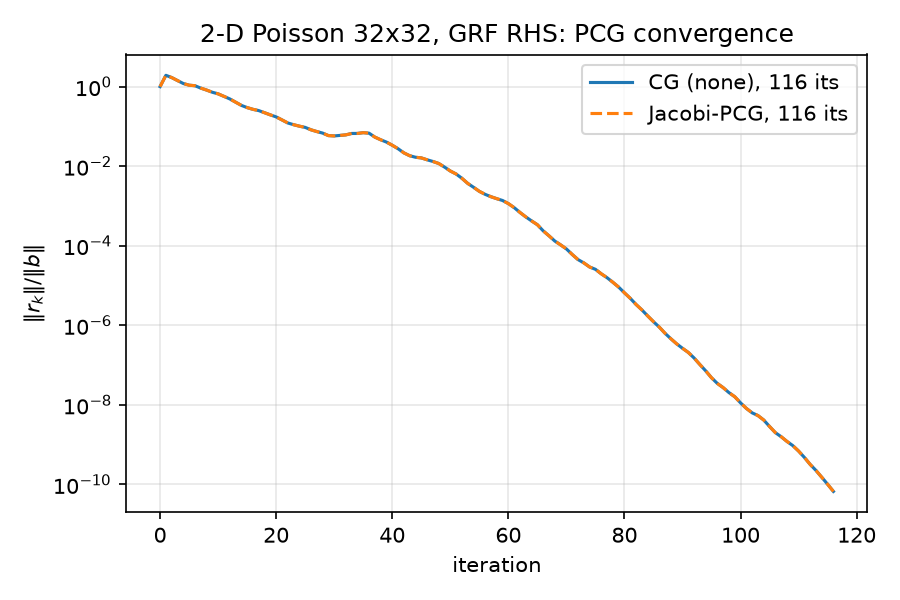

05 — Classical Preconditioners: Jacobi, ILU, and the Road to Multigrid
This report covers the classical (non-learned, non-randomized) preconditioners in the suite: Jacobi, ILU, and — as context — Gauss–Seidel / SSOR and multigrid. The headline results, all from results/results.json (produced by python/experiments/run_all.py):
| problem | method | iterations to $10^{-10}$ | note |
|---|---|---|---|
poisson_2d(32) |
CG (none) | 116 | baseline |
poisson_2d(32) |
CG (Jacobi) | 116 | provably identical to plain CG |
poisson_2d(32) |
CG (ILU) | 5 | 23× fewer iterations |
variable_poisson_2d(32, 100) |
CG (none) | 771 | |
variable_poisson_2d(32, 100) |
CG (Jacobi) | 137 | 5.6× fewer — Jacobi finally earns its keep |
The Jacobi rows are the pedagogically interesting ones: the constant-coefficient tie is a theorem, not an accident, and the variable-coefficient win shows exactly what breaks the theorem. ILU is the practical winner at this scale, and the closing section explains why none of these is the right answer for Poisson at scale — multigrid is — which is precisely why the NPO paper (arXiv:2502.01337 (https://arxiv.org/abs/2502.01337)) builds a neural multigrid rather than a neural Jacobi or neural ILU.
Companion reports: the PCG algorithm itself is derived in 04-krylov-and-pcg.md, the spectrum $\kappa(A) = 440.69$ that all of these preconditioners are attacking is derived in 02-eigenvalues.md, the randomized Nyström preconditioner (which loses to plain CG here) is in 07-nystrom-preconditioning.md, and the neural preconditioner is in 06-neural-preconditioner.md.
1. What a preconditioner has to do
PCG (see python/pcg.py, lines 15–81) solves $Ax = b$ for SPD $A$ using a callable $z = M(r) \approx A^{-1} r$. For a fixed SPD preconditioner $P^{-1}$ (so $M(r) = P^{-1}r$), PCG is mathematically CG applied to the split-preconditioned system
$$ \left(P^{-1/2} A P^{-1/2}\right)\, \tilde{x} = P^{-1/2} b, \qquad x = P^{-1/2}\tilde{x}, $$
and the CG error bound transfers with $\kappa(A)$ replaced by $\kappa(P^{-1/2} A P^{-1/2}) = \kappa(P^{-1}A)$:
$$ \Vert x_k - x_\star\Vert _A \;\le\; 2 \left( \frac{\sqrt{\kappa}-1}{\sqrt{\kappa}+1} \right)^{k} \Vert x_0 - x_\star\Vert _A . $$
For our canonical problem, $\kappa(A) = 440.6886$ exactly (analytic value $440.6885603836582$ from results/spectra.json, matching the dense eigensolve to all printed digits; see 02-eigenvalues.md). That gives an asymptotic per-iteration contraction factor $(\sqrt{\kappa}-1)/(\sqrt{\kappa}+1) = (20.99-1)/(20.99+1) \approx 0.909$ and a worst-case bound of $\lceil \tfrac{1}{2}\sqrt{\kappa}\,\ln(2\cdot 10^{10}) \rceil = 249$ iterations to $10^{-10}$; observed is 116 because the bound ignores the clustering/Ritz-deflation effects discussed in 04-krylov-and-pcg.md. A preconditioner's job is to make $\kappa(P^{-1}A)$ small — or, more sharply, to cluster the eigenvalues of $P^{-1}A$ (clustering, not just $\kappa$, is what actually drives iteration counts; the NPO analysis in 06-neural-preconditioner.md makes this vivid).
All experiments below: $A$ of size $N = n^2 = 1024$ ($n = 32$, $h = 1/33$), $b = $ grf_rhs(32, alpha=2.0, tau=3.0, seed=42) (see 03-gaussian-random-fields.md), tol $10^{-10}$ on $\Vert r_k\Vert /\Vert b\Vert $, maxiter 2000 — the config block of results/results.json.
2. Jacobi: $M = \operatorname{diag}(A)^{-1}$
Implementation (python/preconditioners.py, lines 22–41):
def jacobi(A):
inv_diag = 1.0 / A.diagonal()
return lambda r: r * inv_diag
One elementwise multiply per application — the cheapest nontrivial preconditioner in existence. Whether it does anything at all depends entirely on whether $\operatorname{diag}(A)$ varies.
2.1 Constant-coefficient Laplacian: Jacobi is provably a no-op
For poisson_2d(32) (python/poisson.py, lines 43–68), $A = (\,\mathrm{kron}(d_1, I) + \mathrm{kron}(I, d_1)\,)/h^2$ with the $[-1, 2, -1]$ stencil, so every diagonal entry is
$$ A_{kk} \;=\; \frac{2 + 2}{h^2} \;=\; \frac{4}{h^2} \;=\; 4\cdot 33^2 \;=\; 4356 $$
(verified numerically: A.diagonal() is constant $4356.0$ to machine precision). Hence the Jacobi preconditioner is the scalar map $M = \tfrac{h^2}{4} I = c\,I$ with $c = 1/4356 > 0$.
Claim (PCG scale invariance). Replacing $M$ by $cM$, $c > 0$, leaves every PCG iterate $x_k$ and residual $r_k$ unchanged.
Proof, by induction on the exact recurrence of python/pcg.py lines 61–77. Write primed quantities for the run with $cM$. Initialization: $x_0' = x_0 = 0$, $r_0' = r_0 = b$, and $z_0' = cM(b) = c z_0$, $p_0' = c p_0$, $\rho_0' \equiv r_0'{}^\top z_0' = c\,\rho_0$. Inductive step — assume $x_k' = x_k$, $r_k' = r_k$, $z_k' = c z_k$, $p_k' = c p_k$, $\rho_k' = c \rho_k$. Then:
$$ \alpha_k' = \frac{\rho_k'}{p_k'{}^\top A p_k'} = \frac{c\,\rho_k}{c^2\, p_k^\top A p_k} = \frac{\alpha_k}{c}, \qquad \alpha_k' p_k' = \frac{\alpha_k}{c}\cdot c\, p_k = \alpha_k p_k, $$
so the updates $x_{k+1} = x_k + \alpha_k p_k$ (line 70) and $r_{k+1} = r_k - \alpha_k A p_k$ (line 71) are identical. Next, $z_{k+1}' = cM(r_{k+1}) = c z_{k+1}$ (line 74), $\rho_{k+1}' = c\rho_{k+1}$, the Fletcher–Reeves $\beta_k' = \rho_{k+1}'/\rho_k' = \beta_k$ (line 76), and $p_{k+1}' = z_{k+1}' + \beta_k p_k' = c\,p_{k+1}$. Induction closes; the scale factor $c$ lives entirely inside $z$, $p$, $\rho$ and cancels everywhere it touches $x$ and $r$. $\blacksquare$
(Equivalently at the linear-algebra level: $\kappa\!\big((cI)^{1/2} A\, (cI)^{1/2}\big) = \kappa(cA) = \kappa(A)$, and more strongly the whole Krylov space $\mathcal{K}_k(cA, cb) = \mathcal{K}_k(A, b)$ is unchanged, so the identity holds iterate-by-iterate, not just in the bound.)
Measured. From results/baseline.json / results/results.json:
| CG (none) | CG (Jacobi) | |
|---|---|---|
| iterations | 116 | 116 |
| final relres | $6.666547523655469\times 10^{-11}$ | $6.666547523655465\times 10^{-11}$ |
relerr vs spsolve |
$5.3995\times 10^{-12}$ | $5.3995\times 10^{-12}$ |
The two residual histories (not just endpoints) agree to a maximum deviation of $4.441\times 10^{-16}$ over all 116 iterations — one ulp of 1.0 — measured at python/experiments/run_baseline.py lines 57–59 and recorded in the note field of baseline.json. The floating-point residue exists only because $r \cdot (c\,\text{stuff})$ rounds differently than $c\,(r \cdot \text{stuff})$; in exact arithmetic the deviation is zero. This is asserted as the sanity check jacobi_equals_none_constant_coeff in python/experiments/run_all.py lines 176–179 (PASS, 116 == 116). Curves:

— the dashed Jacobi line sits exactly on the solid CG line.2.2 Contrast: why Jacobi does differ in the NPO paper's Table 1
Table 1 of the NPO paper (arXiv:2502.01337 (https://arxiv.org/abs/2502.01337)) reports, for the 2-D Poisson problem at $32\times 32$ resolution and the same $10^{-10}$ tolerance, GMRES iteration counts of 113 for Jacobi, 81 for Gauss–Seidel, and 34 for NPO — i.e. in their setting Jacobi, Gauss–Seidel and SOR are distinct, non-trivial preconditioners. (Their table has no unpreconditioned row at all; Jacobi is their weakest classical baseline — though not the weakest overall: their neural UNet baseline needs 1025 iterations at the same $32\times 32$, $10^{-10}$ setting.)
At first glance this contradicts §2.1 — but the scale-invariance argument is solver-agnostic. Left-preconditioned GMRES with $M = cI$ solves $(cA)x = cb$, and $\mathcal{K}_k(cA, cb) = \mathcal{K}_k(A, b)$ while the minimized residual is scaled uniformly by $c$, so GMRES iterates would also be identical to unpreconditioned GMRES if their matrix had a constant diagonal. The fact that their Jacobi count (113) differs from their Gauss–Seidel count (81), and that Jacobi is a meaningful baseline at all, tells you that in their pipeline $\operatorname{diag}(A)$ is not constant. That is consistent with their setup: the paper discretizes $-\nabla\!\cdot\!(\nabla u) = f$ "using finite elements or finite differences" across a family of geometries including irregular/unstructured meshes, and trains/evaluates across mesh families. FEM assembly (element-area-weighted stiffness entries, boundary rows, non-uniform vertex valence on unstructured meshes) generically produces a varying diagonal, so Jacobi genuinely rescales the problem. Our repo isolates the opposite, textbook-degenerate case: a uniform tensor-product FD grid where the diagonal is the constant $4/h^2$ and Jacobi is exactly nothing. The near-coincidence of their Jacobi count (113) with our unpreconditioned count (116) on the same nominal $32\times 32$ Poisson problem is a pleasant consistency check — with a near-trivial diagonal, GMRES+Jacobi ≈ plain Krylov — while our FCG+NPO count of 30 (see 06-neural-preconditioner.md) sits right next to their NPO count of 34.
2.3 Variable coefficients: where Jacobi earns 5.6×
To break the constant diagonal within this repo, python/poisson.py lines 71–128 build variable_poisson_2d(n, contrast=100.0): a finite-volume discretization of $-\nabla\!\cdot\!\big(a(x)\nabla u\big) = f$ with a piecewise-constant coefficient jumping at the vertical midline,
$$ a(x, y) = \begin{cases} 1, & x < 0.5 \\ 100, & x \ge 0.5, \end{cases} $$
using harmonic-mean face transmissibilities in $x$, $w_{i+1/2} = \dfrac{2\,a_i a_{i+1}}{a_i + a_{i+1}}$ (lines 116–119), which is the flux-conserving choice at a material interface (LeVeque, Finite Difference Methods for ODEs and PDEs, SIAM 2007, §2.15). At the interface faces $w = 2\cdot 1\cdot 100/101 = 1.9802$. The assembled diagonal $A_{kk} = \big(w_{i-1/2} + w_{i+1/2} + 2a_i\big)/h^2$ takes exactly four values on this grid (verified numerically from Av.diagonal()):
| node location | diagonal value |
|---|---|
| bulk, $a = 1$ side | $4/h^2 = 4356$ |
| interface-adjacent, $a = 1$ side | $(1 + 1.9802 + 2)/h^2 = 5423.44$ |
| interface-adjacent, $a = 100$ side | $(1.9802 + 100 + 200)/h^2 = 328856.44$ |
| bulk, $a = 100$ side | $400/h^2 = 435600$ |
— a $100\times$ spread ($4356 \to 435600$), so $M = \operatorname{diag}(A)^{-1}$ is very far from a scalar. Measured (from results.json, variable block; produced at python/experiments/run_all.py lines 149–154):
| method | iterations | final relres | relerr vs spsolve |
|---|---|---|---|
| CG (none) | 771 | $8.979\times 10^{-11}$ | $4.52\times 10^{-12}$ |
| CG (Jacobi) | 137 | $9.219\times 10^{-11}$ | $1.12\times 10^{-12}$ |
That is a 5.63× iteration reduction (asserted as jacobi_beats_none_variable_coeff, PASS). The spectral explanation, computed by a dense eigensolve for this report ($N = 1024$, so exact eigenvalues are cheap):
$$ \kappa(A_{\mathrm{var}}) = 17767.3, \qquad \kappa\!\big(D^{-1/2} A_{\mathrm{var}} D^{-1/2}\big) = 428.0 , $$
a 41.5× condition-number reduction — diagonal scaling strips the $100\times$ coefficient contrast out of the spectrum almost entirely, returning $\kappa$ to essentially the constant-coefficient value $440.7$. The $\sqrt{\kappa}$ heuristic predicts an iteration ratio of $\sqrt{17767.3/428.0} = 6.44$; observed is $771/137 = 5.63$ — the right ballpark, with the discrepancy again due to clustering effects that the pure-$\kappa$ bound ignores. Note the two effects compose: Jacobi fixes the coefficient contrast but not the mesh ill-conditioning, which is why Jacobi-PCG at 137 still sits near the constant-coefficient CG count of 116 rather than anywhere near ILU's 5.
Two classical remarks worth having on file:
- van der Sluis optimality (van der Sluis, Numer. Math. 14, 1969): among all diagonal scalings $D$, choosing $D = \operatorname{diag}(A)$ brings $\kappa(D^{-1/2}AD^{-1/2})$ within a factor $m$ of the optimum, where $m$ is the maximal number of nonzeros per row ($m = 5$ here). So Jacobi is not just cheap — it is provably near-optimal within its class. Its class is just weak.
- The same logic explains a common practitioner's rule: Jacobi helps exactly when the matrix is badly scaled (variable coefficients, mixed units, FEM with varying element sizes) and does nothing when the ill-conditioning is structural (mesh-induced $O(h^{-2})$ growth), which no diagonal can touch.
3. ILU: incomplete factorization
3.1 What it is
A sparse direct solve computes $A = LU$; for 2-D grid problems the factors suffer fill-in — positions that are zero in $A$ become nonzero in $L, U$ (for the 5-point Laplacian ordered lexicographically, the band between the main diagonal and the $\pm n$ off-diagonals fills solid, giving $O(N^{3/2})$ factor nonzeros — $37{,}334$ for our $N = 1024$, measured with splu, versus $4{,}992$ nonzeros in $A$). An incomplete LU factorization computes approximate factors $\tilde{L}\tilde{U} \approx A$ while suppressing fill, then uses $P^{-1} r = \tilde{U}^{-1}\tilde{L}^{-1} r$ (two triangular solves) as the preconditioner. The two knobs:
- Fill pattern / levels — ILU(0) allows no fill at all (factors have exactly the sparsity of $A$); ILU($k$) allows fill of "level" ≤ $k$.
- Threshold dropping (ILUT) — drop any factor entry smaller than
drop_tol(relative to its row), and cap the growth atfill_factor× nnz($A$). Saad's ILUT and SuperLU's ILUTP (with partial pivoting; Li & Shao, ACM TOMS 37(4), 2011) are the standard implementations.
The trade is monotone: more fill ⇒ $\tilde L \tilde U$ closer to $A$ ⇒ eigenvalues of $P^{-1}A$ more tightly clustered at 1 ⇒ fewer CG iterations, but more setup time, more memory, and more work per application. At drop_tol → 0 you recover the exact factorization and CG converges in 1 iteration; at ILU(0) on the 5-point Poisson stencil the preconditioned condition number is still $O(h^{-2})$ (only the constant improves — roughly 5–10×); the modified variant MILU achieves $O(h^{-1})$ (Gustafsson 1978).
3.2 What we ran
python/preconditioners.py lines 44–60 wrap scipy.sparse.linalg.spilu with default parameters, which SciPy forwards to SuperLU's ILUTP defaults: drop_tol = 1e-4, fill_factor = 10. Measured properties of the resulting factorization on poisson_2d(32) (computed for this report):
- nnz($\tilde L$) + nnz($\tilde U$) = 34,719 vs. nnz($A$) = 4,992 — a fill ratio of 6.95, i.e. 93% of the exact factorization's 37,334 nonzeros. With
drop_tol = 1e-4on a 1024-unknown problem, ILUTP is nearly a direct solve. - Used as a one-shot solver, $\Vert A\tilde U^{-1}\tilde L^{-1} b - b\Vert /\Vert b\Vert = 7.2\times 10^{-3}$ — not exact, but a $10^{-2}$-accurate inverse.
- The preconditioned spectrum, $\operatorname{eig}(P^{-1}A)$ computed densely: all 1024 eigenvalues have real part in $[0.99804,\ 1.00057]$, max $\vert \mathrm{Im}\vert = 3.4\times 10^{-4}$, spread $\lambda_{\max}/\lambda_{\min} = \mathbf{1.00253}$. Compare $\kappa(A) = 440.69$.
With $\kappa \approx 1.00253$, the CG contraction factor is $(\sqrt{\kappa}-1)/(\sqrt{\kappa}+1) \approx 6.3\times 10^{-4}$ per iteration — three orders of magnitude of residual per step. Measured (from results.json):
| CG (ILU) | |
|---|---|
| iterations | 5 |
| final relres | $6.212\times 10^{-13}$ (overshoots the $10^{-10}$ tol) |
| solve wall time | $0.236$ ms |
| setup time | $0.996$ ms |
| relerr vs spsolve | $8.17\times 10^{-14}$ |
Five iterations at $\sim\!6\times 10^{-4}$ contraction per iteration is exactly the right order: $(6.3\times 10^{-4})^5 \sim 10^{-16}$ bounds the $A$-norm error, and the observed relres path lands at $6\times 10^{-13}$. This is by far the fastest method in the suite (see  — the green ILU curve falls off a cliff while everything else grinds).
— the green ILU curve falls off a cliff while everything else grinds).
3.3 The honest caveats
- At $N = 1024$ everything is free. ILU total time (setup + solve) is $1.23$ ms vs. $1.17$ ms for plain CG — a wash. The iteration count is the scientifically meaningful column at this scale; wall-clock rankings only become meaningful at $N$ where the $O(N^{3/2})$–$O(N^2)$ growth of fill and the sequential triangular solves start to bite.
drop_tol = 1e-4at this size is cheating, in the sense that the "incomplete" factorization retains 93% of the exact factor's nonzeros. On large 3-D problems the same settings produce a genuinely incomplete factorization and iteration counts in the tens; the 5-iteration result should be read as "a near-direct method wins at toy scale," not "ILU clusters Poisson spectra this well asymptotically." ILU(0)-class preconditioners keep $\kappa = O(h^{-2})$; the mesh ill-conditioning survives.- Triangular solves are sequential. Each application of $\tilde U^{-1}\tilde L^{-1}$ is a forward+backward substitution with loop-carried dependencies — hostile to GPUs and to the batched-inference setting neural preconditioners target. This, plus the setup cost and the mesh-by-mesh refactorization requirement, is exactly the pain point the NPO paper cites for classical preconditioners: they often "require extensive tuning and struggle to generalize across different meshes or parameters."
4. Gauss–Seidel, SOR, SSOR — the smoothers
We did not run these (the NPO paper's Table 1 did — Gauss–Seidel beat Jacobi 81 vs. 113 on their $32\times 32$ Poisson), but they matter for the story, so briefly and precisely. Split $A = D + L + L^\top$ (diagonal, strict lower, strict upper). Then:
- Gauss–Seidel uses $P = D + L$. As a preconditioner for CG this is inadmissible as-is — $P$ is not symmetric — which is why GS appears in the paper's GMRES columns but not in our CG suite. (Feeding a nonsymmetric $M$ to Fletcher–Reeves PCG is precisely the failure mode dissected for the NPO in 06-neural-preconditioner.md: our deliberate negative control
cg_npostalls at $\sim\!10^{-5}$ for 2000 iterations.) - SSOR symmetrizes it: $P_\omega = \frac{1}{\omega(2-\omega)}(D + \omega L)\, D^{-1} (D + \omega L)^\top$, which is SPD for $0 < \omega < 2$ and CG-admissible. With the optimal $\omega$, SSOR-PCG achieves $\kappa(P^{-1}A) = O(h^{-1})$ on Poisson (Axelsson & Barker, Finite Element Solution of Boundary Value Problems, 1984) — asymptotically better than Jacobi or ILU(0) (both $O(h^{-2})$), i.e. $O(h^{-1/2})$ CG iterations instead of $O(h^{-1})$.
- Their real significance is different: GS/SOR are excellent smoothers. One GS sweep barely reduces the error overall (spectral radius $1 - O(h^2)$) but annihilates the high-frequency error components (the $\lambda \sim 8/h^2$ end of the spectrum in 02-eigenvalues.md) at a rate independent of $h$. The error left after a few sweeps is smooth — and a smooth function is accurately representable on a coarser grid. That observation is multigrid.
5. Why multigrid is the right answer for Poisson — and why NPO is a neural multigrid
Every method above fights $\kappa(A) = \Theta(h^{-2}) \approx 0.41\, n^2$ (measured scaling in results/spectra.json: $\kappa/n^2 \to \approx 0.41$; see 02-eigenvalues.md) and loses asymptotically:
| method | $\kappa(P^{-1}A)$ | iterations to fixed tol | work to fixed tol |
|---|---|---|---|
| CG, Jacobi-CG | $O(h^{-2})$ | $O(h^{-1}) = O(N^{1/2})$ | $O(N^{3/2})$ |
| ILU(0)-CG | $O(h^{-2})$, better constant | $O(N^{1/2})$ | $O(N^{3/2})$ |
| SSOR-CG (opt. $\omega$), MILU-CG | $O(h^{-1})$ | $O(N^{1/4})$ | $O(N^{5/4})$ |
| multigrid (V-cycle) | $O(1)$ | $O(1)$ | $\mathbf{O(N)}$ |
Geometric multigrid's mechanism, in one paragraph: a stationary smoother (damped Jacobi, GS) contracts the oscillatory half of the spectrum with an $h$-independent factor but is nearly powerless on smooth modes; multigrid restricts the smoothed residual to a $2h$ grid — where the formerly-smooth modes are now (relatively) oscillatory and the problem is $4\times$ smaller — solves there recursively, and prolongates the correction back. One V-cycle costs $O(N)$ (geometric series: $N + N/4 + N/16 + \dots$) and contracts the whole error by a grid-independent factor, classically $\rho \approx 0.1$ per cycle for 2-D Poisson with red–black GS smoothing (Trottenberg, Oosterlee & Schüller, Multigrid, 2001). Ten-ish cycles to $10^{-10}$, at any $N$, forever. For constant-coefficient Poisson on a box, multigrid (or FFT — see the diagonalization in 02-eigenvalues.md) is simply the end of the conversation; nothing in this report's table would survive a scaling study against it.
The catch is the word geometric: the two-grid argument needs a mesh hierarchy, smoothers matched to the operator, and transfer operators that respect the coefficients — precisely the "extensive tuning" that breaks on unstructured meshes, jumping coefficients (§2.3 is a baby version; strong contrasts degrade naive coarse-grid correction), and changing geometries. Algebraic multigrid (AMG) automates the hierarchy from the matrix graph, but its heuristics are themselves fragile and setup-heavy.
This is the design brief the NPO paper answers (arXiv:2502.01337 (https://arxiv.org/abs/2502.01337)): the architecture explicitly "blends algebraic multigrid principles with a transformer-based architecture" — learned restriction/prolongation-like multi-level structure with learned smoothing, trained with condition- and residual-based losses, amortizing the AMG setup across a problem distribution. In other words: the paper does not try to learn a better Jacobi (pointwise, provably weak — §2), nor a better ILU (sequential, mesh-specific — §3); it tries to learn the one algorithm from this report's lineage that actually has the right asymptotics. Our measured FCG+NPO result — 30 iterations vs. 116, with the preconditioned eigenvalue spread collapsed from 440.7 to 12.6 — is analyzed in 06-neural-preconditioner.md.
6. Full honest comparison
Canonical problem poisson_2d(32), $b$ = GRF, tol $10^{-10}$ — all numbers verbatim from results/results.json; Nyström condition numbers from results/nystrom.json:
| method | iters | final relres | solve [ms] | setup [ms] | $\kappa$ or spread of precond. system | verdict |
|---|---|---|---|---|---|---|
| CG (none) | 116 | $6.67\times 10^{-11}$ | 1.17 | 0 | $\kappa = 440.69$ | baseline |
| CG (Jacobi) | 116 | $6.67\times 10^{-11}$ | 1.19 | ~0 | $\kappa = 440.69$ (exactly — §2.1) | provably pointless here |
| CG (ILU, spilu defaults) | 5 | $6.21\times 10^{-13}$ | 0.24 | 1.00 | $\lambda(P^{-1}A) \subset [0.998, 1.001]$ | wins, but near-direct at this size |
| CG (Nyström, rank 16) | 123 | $9.52\times 10^{-11}$ | 1.84 | 0.74 | $\kappa = 439.62$ | worse than nothing |
| CG (Nyström, rank 64) | 123 | $8.01\times 10^{-11}$ | 1.88 | 4.18 | $\kappa = 434.52$ | worse than nothing |
| CG (Nyström, rank 128) | 122 | $7.73\times 10^{-11}$ | 2.00 | 11.56 | $\kappa = 426.58$ | worse than nothing |
| CG (Nyström, rank 256) | 119 | $9.18\times 10^{-11}$ | 2.33 | 23.84 | $\kappa = 407.46$ | worse than nothing |
| FCG (NPO, Notay) | 30 | $7.16\times 10^{-11}$ | 27.66 | 2.72 | spread 12.6, 98.1% of $\lambda$ in $[0.5, 2]\times$median | fewest matvec-iterations after ILU |
| CG (NPO, plain — negative control) | 2000 | $9.65\times 10^{-6}$ | 1676 | 2.72 | (nonsymmetric $M$ breaks FR-PCG) | did not converge |
Variable-coefficient problem variable_poisson_2d(32, contrast=100):
| method | iters | final relres | $\kappa$ of precond. system |
|---|---|---|---|
| CG (none) | 771 | $8.98\times 10^{-11}$ | $17767.3$ |
| CG (Jacobi) | 137 | $9.22\times 10^{-11}$ | $428.0$ |
Reading guide, without spin:
- Jacobi costs nothing and is worth exactly what the diagonal's variation is worth: nothing on the constant-coefficient problem (theorem, §2.1), 5.6× on the 100:1-contrast problem (§2.3). It removes scaling pathology only; the $O(h^{-2})$ mesh pathology is untouched in both cases (137 ≈ 116).
- ILU dominates this benchmark outright, but at $N = 1024$ with
drop_tol = 1e-4it is 93% of a direct solve; its asymptotic class is still $O(h^{-2})$, its triangular solves don't parallelize, and its factors don't transfer across meshes or coefficients. - Nyström (07-nystrom-preconditioning.md) is the instructive failure: all four ranks take more iterations than plain CG (119–123 vs. 116) despite marginally smaller exact $\kappa$ — the Laplacian's slowly-decaying-from-the-top spectrum is the adversarial case for low-rank deflation (even the optimal rank-256 deflation would only reach $\kappa = 298$), and the sketch's slight distortion of the undeflated spectrum costs more than the tiny $\kappa$ gain buys.
- NPO (06-neural-preconditioner.md) gets 3.87× fewer iterations than CG by clustering (spread 12.6 vs. 440.7), but only inside flexible CG — as a nonlinear, nonsymmetric operator it destroys plain PCG (the 2000-iteration stall is deliberate, recorded, and explained there) — and its per-application cost (a network forward pass) makes it 24× slower than plain CG in wall time at this toy scale. Its case, like multigrid's, is asymptotic and cross-problem, not $N = 1024$.
- None of the above is multigrid. For Poisson at scale the classical answer is $O(N)$ multigrid (§5); the honest role of this table is to show what the neural-multigrid line of work (arXiv:2502.01337 (https://arxiv.org/abs/2502.01337)) is trying to automate, and what it must beat.